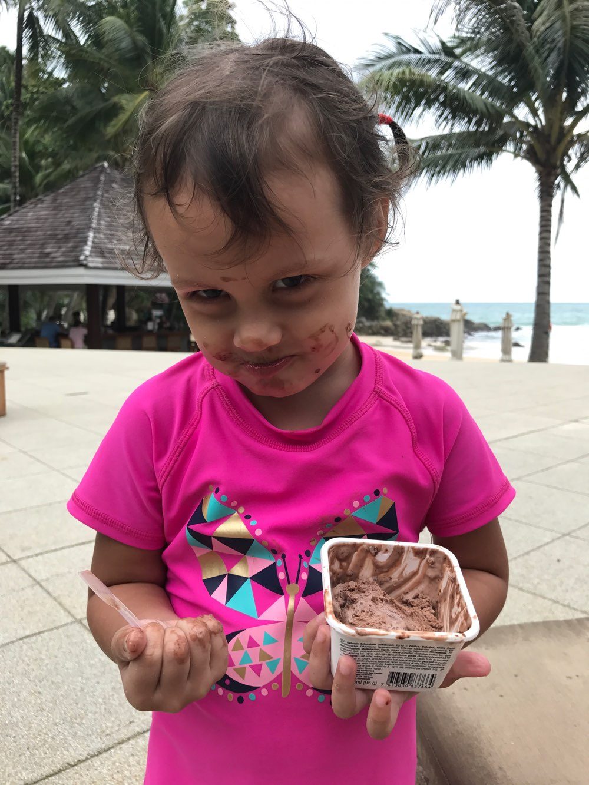

Matilda eating 🍫🍦
On holiday with Daddy and Kate in
Thailand
,
July 2017
🏝 🌊.
🎨 Open filters
Apply filters to Matilda or change the background colour of the document
Blur filter:
Invert filter:
Sepia filter:
BG colour:
